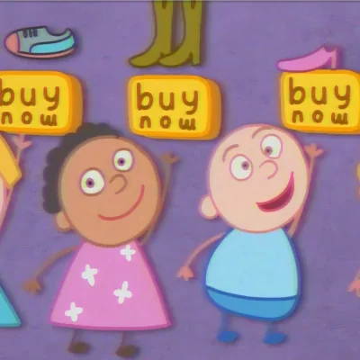

Всеки от нас знае натрапчивите реклами, които виждаме всеки ден в ежеднеивето си, и много от нас ги ненавиждаме.
Основната цел на рекламата е да продаде продукта. За да се постигне това, специалистите в тази сфера използват различни видове, подли стратегии за минипулация с цел, те да въздействат подсъзнателно на човек.

Знаейки това, човек би си задал въпроса, как мога да отстраня рекламите или, как мога да не си губя времето в гледане на реклами?
Тук основно ще споделя различни видове алтернативи за обикновенния Youtube, който с всяка изминала година става по-зле и по-зле с налагането на реклами, но и други също толкова важни причини.
Тези алтернативи (приложения), не изисква никакви данни от вас, за да фукционират, за разлика от останалите мейнстрийм приложения и компании.
Приложението FreeTube с отворен код е създадено със замисъл за респект към вашата поверителност.
То представлява Front-end на Youtube, където потребителят има локален акаунт, без да се налага да прави регистрации свързани с Youtube (Google).
Чрез него може да се гледа без никакви реклами, което е един от основните плюсове, но и позволява да се теглят видеа в различни формати.
Единственият "минус" е, че няма възможност за коментиране и лайкване.
Може да го изтеглите от тук: FreeTube
Това приложение е предназначено само за мобилни устройства, предимно смарт-телефони, като то също цени вашата поверителност.
Хубавото на NewPipe е, че наподобява изцяло на вграденото приложение "Youtube", което се среща в почти всеки телефон, но и че има много други функции. Важно е да кажа, че то работи много по-леко (което значи, че консумира по-малко батерия).
Приложението има всички плюсове, както FreeTube, но важен фактор, който всеки би оценил е възможността, да слушаш видеа на заден фон.
Това ви позволява да използвате други приложения, докато слушате видеа, но също и способността да заключите телефона, без да спира аудиото.
Може да го изтеглите от тук: NewPipe
Тази алтернатива е уеб-базирано приложение. Така то може, да бъде достъпно през всеки браузър, без да e нужно, да се тегли.
При него има всички фукции, както NewPipe приложението.
Може да го разгледате тук: Invidious